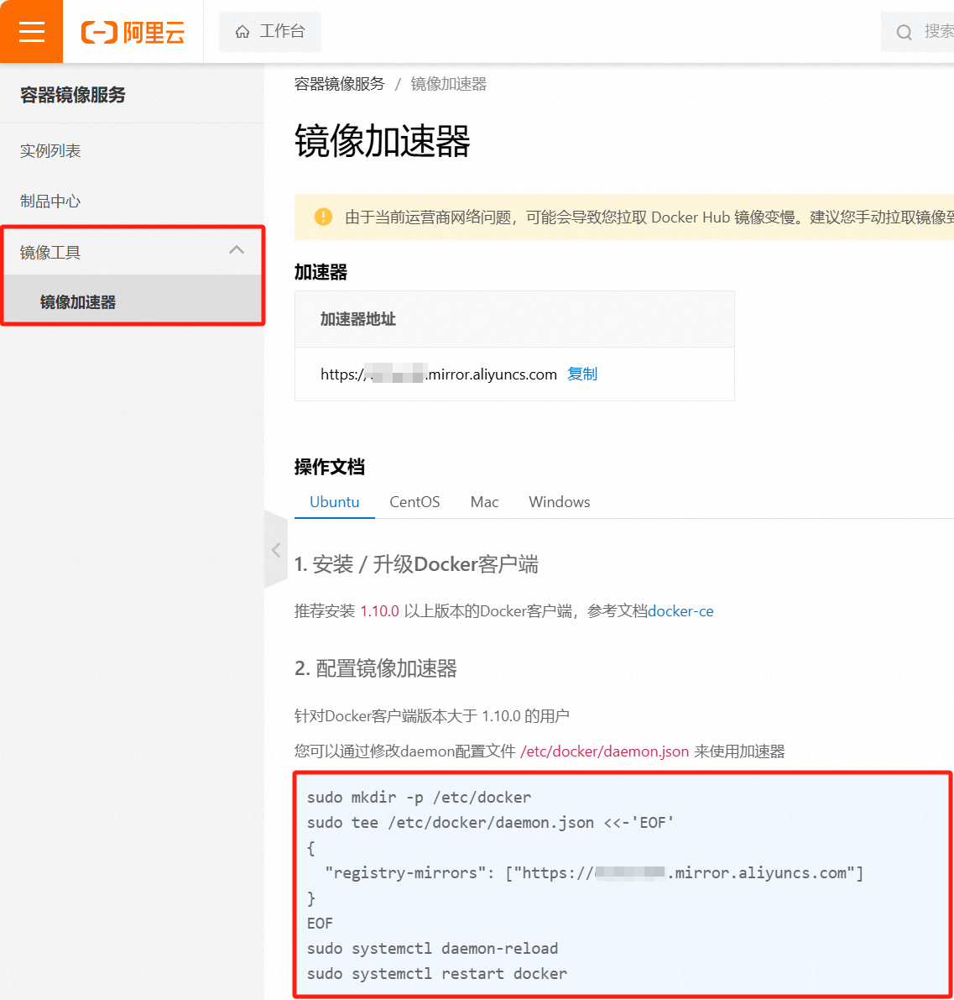

后端开发入门Docker：从基础到实践
Docker
Docker 是一个开源的容器化平台，它使开发人员能够在隔离的环境中构建、打包和部署应用程序。通过使用 Docker，应用程序可以在任何环境中运行，而不必担心底层硬件或操作系统的差异。
虽然我们学习的主要是后端开发，但了解 Docker 及其相关工具可以帮助开发人员更好地理解 DevOps 流程，提高整体技术素养和职业竞争力。当然，我们不是运维，并不会全部都学到。
Docker的好处
Docker 是一种开源的容器化平台，它能够显著简化软件开发、部署和运行过程中的许多方面。
- 环境一致性：
- Docker 容器提供了一致的运行环境，不管在开发、测试还是生产环境中，都能保证应用程序的运行一致性，减少了“在我机器上可以工作”的问题。
- 依赖管理：
- Docker 容器包含了应用程序运行所需的所有依赖项（例如库、工具和配置文件），使得依赖管理变得简单和可靠。
- 快速部署：
- 通过使用 Docker 镜像，可以快速地在不同的环境中部署应用程序。镜像是可移植的，确保了快速启动和部署过程的一致性。
- 资源隔离：
- Docker 容器提供了轻量级的资源隔离机制，确保不同的应用程序或服务在独立的容器中运行，减少了资源冲突和相互影响。
- 版本控制：
- Docker 镜像可以像代码一样进行版本控制，方便管理和回滚到之前的版本。这有助于快速恢复和测试不同的应用版本。
- 扩展性和可伸缩性：
- 使用 Docker，可以轻松地扩展应用程序。通过编排工具如 Docker Compose 或 Kubernetes，可以实现容器的自动扩展和管理。
- 持续集成和持续部署（CI/CD）：
- Docker 与 CI/CD 工具集成，可以实现自动化的构建、测试和部署流程，提升开发效率和代码质量。
- 开发效率：
- 开发人员可以在本地快速搭建和测试完整的开发环境，而不需要担心环境配置问题，从而提高开发效率。
前置准备
首先你得有一台Linux操作系统，可以是虚拟机上的，也可以是云服务器上的，我在这里就简单使用我的虚拟机里面的CentOS 7。
其次你总得有个终端软件吧，用命令操作Linux系统，推荐我正在使用的Tabby，没有的可以看我另外一篇博客安装Tabby：一款出色的开源终端工具 | Panda)
最后就是一些Linux命令的使用，不会再查就好咯
对了，还有一颗好学的心
Docker安装
卸载旧版
首先如果系统中已经存在旧的Docker，则先卸载：
1 | yum remove docker \ |
配置Docker的yum库
首先要安装一个yum工具
1 | sudo yum install -y yum-utils device-mapper-persistent-data lvm2 |
安装成功后，执行命令，配置Docker的yum源（已更新为阿里云源）：
1 | sudo yum-config-manager --add-repo https://mirrors.aliyun.com/docker-ce/linux/centos/docker-ce.repo |
更新yum，建立缓存
1 | sudo yum makecache fast |
安装Docker
最后，执行命令，安装Docker，静待下载，当看到Complete! 说明就安装好了
1 | yum install -y docker-ce docker-ce-cli containerd.io docker-buildx-plugin docker-compose-plugin |
启动和校验
1 | # 启动Docker |
启动Docker后运行systemctl status docker看到active(running)证明启动成功

配置镜像加速
这里以阿里云镜像加速为例。
注册阿里云账号
首先访问阿里云https://www.aliyun.com注册一个账号。
开通镜像服务
在首页的产品中，找到阿里云的容器镜像服务：

点击后进入管理控制台：

配置镜像加速
找到镜像工具下的镜像加速器，选择好对应的系统，直接复制下端命令去终端运行
Docker基础
安装成功后，接下来，我们一起来学习Docker使用的一些基础知识，为将来独立部署项目打下基础。
Docker命令
查阅命令可以到Use the Docker command line | Docker Docs官网查询
常见命令
加粗的是我觉得比较常用的，方便回来查找
| 命令 | 说明 | 文档地址 |
|---|---|---|
| docker pull | 拉取镜像 | docker pull |
| docker push | 推送镜像到DockerRegistry | docker push |
| docker images | 查看本地镜像 | docker images |
| docker rmi | 删除本地镜像 | docker rmi |
| docker run | 创建并运行容器（不能重复创建） | docker run |
| docker stop | 停止指定容器 | docker stop |
| docker start | 启动指定容器 | docker start |
| docker restart | 重新启动容器 | docker restart |
| docker rm | 删除指定容器 | docs.docker.com |
| docker ps | 查看容器 | docker ps |
| docker logs | 查看容器运行日志 | docker logs |
| docker exec | 进入容器 | docker exec |
| docker save | 保存镜像到本地压缩文件 | docker save |
| docker load | 加载本地压缩文件到镜像 | docker load |
| docker inspect | 查看容器详细信息 | docker inspect |
用图来说明他们之间的关系，别担心，我们会慢慢学习
特别注意：通过镜像来创建容器
- 镜像：英文是image
- 容器：英文是container

命令演示和Docker快速上手
我们简单地通过Docker来安装一个MySQL，来体验Docker安装MySQL的快捷
1.
双 手 合 十 成 为 自 己 的 神
自 己 所 信 念 的 即 是 信 仰

微 信 号 ： L I J J J W E I
Q Q 号 ： 2 8 4 8 5 2 7 4 8 5